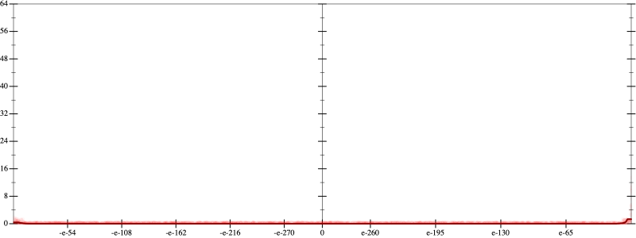
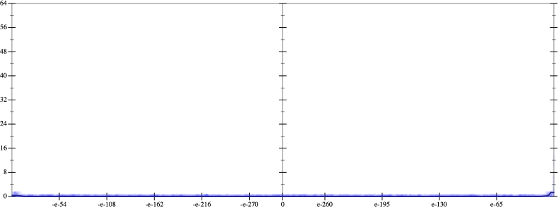
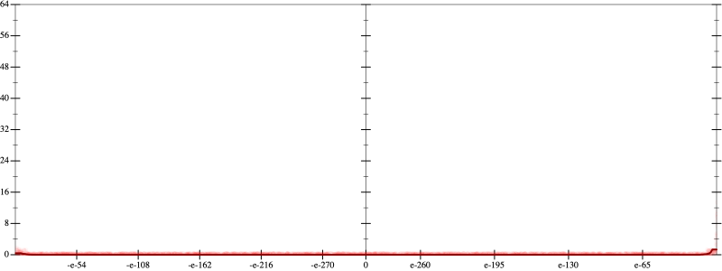
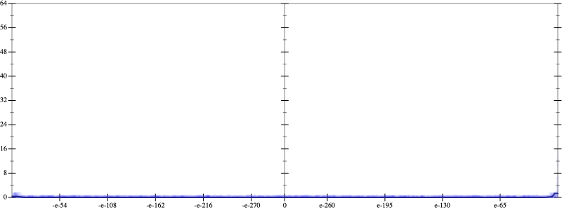

Initial program 0.0
\[\left(\left(\left(\left(\left(\left(\left(\left(\left(\left(\left(\left(\left(1.0 + -22.0 \cdot x\right) + 115.5 \cdot \left(x \cdot x\right)\right) + -256.666667 \cdot \left(\left(x \cdot x\right) \cdot x\right)\right) + 304.791667 \cdot \left(\left(\left(x \cdot x\right) \cdot x\right) \cdot x\right)\right) + -219.45 \cdot \left(\left(\left(\left(x \cdot x\right) \cdot x\right) \cdot x\right) \cdot x\right)\right) + 103.629167 \cdot \left(\left(\left(\left(\left(x \cdot x\right) \cdot x\right) \cdot x\right) \cdot x\right) \cdot x\right)\right) + -33.838095 \cdot \left(\left(\left(\left(\left(\left(x \cdot x\right) \cdot x\right) \cdot x\right) \cdot x\right) \cdot x\right) \cdot x\right)\right) + 7.930804 \cdot \left(\left(\left(\left(\left(\left(\left(x \cdot x\right) \cdot x\right) \cdot x\right) \cdot x\right) \cdot x\right) \cdot x\right) \cdot x\right)\right) + -1.370756 \cdot \left(\left(\left(\left(\left(\left(\left(\left(x \cdot x\right) \cdot x\right) \cdot x\right) \cdot x\right) \cdot x\right) \cdot x\right) \cdot x\right) \cdot x\right)\right) + 0.178198 \cdot \left(\left(\left(\left(\left(\left(\left(\left(\left(x \cdot x\right) \cdot x\right) \cdot x\right) \cdot x\right) \cdot x\right) \cdot x\right) \cdot x\right) \cdot x\right) \cdot x\right)\right) + -0.017673 \cdot \left(\left(\left(\left(\left(\left(\left(\left(\left(\left(x \cdot x\right) \cdot x\right) \cdot x\right) \cdot x\right) \cdot x\right) \cdot x\right) \cdot x\right) \cdot x\right) \cdot x\right) \cdot x\right)\right) + 0.00135 \cdot \left(\left(\left(\left(\left(\left(\left(\left(\left(\left(\left(x \cdot x\right) \cdot x\right) \cdot x\right) \cdot x\right) \cdot x\right) \cdot x\right) \cdot x\right) \cdot x\right) \cdot x\right) \cdot x\right) \cdot x\right)\right) + -8 \cdot 10^{-05} \cdot \left(\left(\left(\left(\left(\left(\left(\left(\left(\left(\left(\left(x \cdot x\right) \cdot x\right) \cdot x\right) \cdot x\right) \cdot x\right) \cdot x\right) \cdot x\right) \cdot x\right) \cdot x\right) \cdot x\right) \cdot x\right) \cdot x\right)\right) + 4 \cdot 10^{-06} \cdot \left(\left(\left(\left(\left(\left(\left(\left(\left(\left(\left(\left(\left(x \cdot x\right) \cdot x\right) \cdot x\right) \cdot x\right) \cdot x\right) \cdot x\right) \cdot x\right) \cdot x\right) \cdot x\right) \cdot x\right) \cdot x\right) \cdot x\right) \cdot x\right)\]
Applied simplify0.0
\[\leadsto \color{blue}{\left(\left(\left(\left(\left(x \cdot x\right) \cdot \left(x \cdot x\right)\right) \cdot \left(\left(x \cdot x\right) \cdot \left(x \cdot x\right)\right)\right) \cdot \left(\left(x \cdot x\right) \cdot \left(x \cdot x\right)\right)\right) \cdot \left(\left(x \cdot x\right) \cdot 4 \cdot 10^{-06}\right) + \left(\left(\left(\left(x \cdot x\right) \cdot \left(x \cdot x\right)\right) \cdot \left(\left(x \cdot x\right) \cdot \left(x \cdot x\right)\right)\right) \cdot \left(\left(x \cdot x\right) \cdot \left(x \cdot x\right)\right)\right) \cdot \left(x \cdot -8 \cdot 10^{-05}\right)\right) + \left(\left(\left(\left(\left(\left(304.791667 \cdot x\right) \cdot {x}^{3} + \left(x \cdot -22.0 + 1.0\right)\right) + \left(\left(x \cdot x\right) \cdot \left(x \cdot -256.666667\right) + \left(x \cdot 115.5\right) \cdot x\right)\right) + \left(\left(-219.45 \cdot x\right) \cdot \left(\left(x \cdot x\right) \cdot \left(x \cdot x\right)\right) + \left(\left(x \cdot x\right) \cdot \left(x \cdot x\right)\right) \cdot \left(\left(x \cdot x\right) \cdot 103.629167\right)\right)\right) + \left(\left(\left({x}^{3} \cdot {x}^{3}\right) \cdot \left(\left(x \cdot x\right) \cdot 7.930804\right) + \left({x}^{3} \cdot {x}^{3}\right) \cdot \left(x \cdot -33.838095\right)\right) + \left(\left(\left(x \cdot x\right) \cdot \left(x \cdot x\right)\right) \cdot \left(\left(x \cdot x\right) \cdot \left(x \cdot x\right)\right)\right) \cdot \left(x \cdot -1.370756\right)\right)\right) + \left(\left(\left(\left(\left(x \cdot x\right) \cdot \left(x \cdot x\right)\right) \cdot \left(\left(x \cdot x\right) \cdot \left(x \cdot x\right)\right)\right) \cdot \left(\left(x \cdot x\right) \cdot 0.178198\right) + \left(\left({x}^{3} \cdot {x}^{3}\right) \cdot {x}^{3}\right) \cdot \left(\left(x \cdot x\right) \cdot -0.017673\right)\right) + \left(\left({x}^{3} \cdot {x}^{3}\right) \cdot \left(\left(x \cdot x\right) \cdot \left(x \cdot x\right)\right)\right) \cdot \left(\left(x \cdot x\right) \cdot 0.00135\right)\right)\right)}\]
Taylor expanded around 0 0.0
\[\leadsto \left(\left(\left(\left(\left(x \cdot x\right) \cdot \left(x \cdot x\right)\right) \cdot \left(\left(x \cdot x\right) \cdot \left(x \cdot x\right)\right)\right) \cdot \left(\left(x \cdot x\right) \cdot \left(x \cdot x\right)\right)\right) \cdot \left(\left(x \cdot x\right) \cdot 4 \cdot 10^{-06}\right) + \left(\left(\left(\left(x \cdot x\right) \cdot \left(x \cdot x\right)\right) \cdot \left(\left(x \cdot x\right) \cdot \left(x \cdot x\right)\right)\right) \cdot \left(\left(x \cdot x\right) \cdot \left(x \cdot x\right)\right)\right) \cdot \left(x \cdot -8 \cdot 10^{-05}\right)\right) + \left(\left(\left(\left(\left(\left(304.791667 \cdot x\right) \cdot {x}^{3} + \left(x \cdot -22.0 + 1.0\right)\right) + \left(\left(x \cdot x\right) \cdot \left(x \cdot -256.666667\right) + \left(x \cdot 115.5\right) \cdot x\right)\right) + \left(\left(-219.45 \cdot x\right) \cdot \left(\left(x \cdot x\right) \cdot \left(x \cdot x\right)\right) + \left(\left(x \cdot x\right) \cdot \left(x \cdot x\right)\right) \cdot \left(\left(x \cdot x\right) \cdot 103.629167\right)\right)\right) + \left(\left(\left({x}^{3} \cdot {x}^{3}\right) \cdot \left(\left(x \cdot x\right) \cdot 7.930804\right) + \left({x}^{3} \cdot {x}^{3}\right) \cdot \left(x \cdot -33.838095\right)\right) + \left(\left(\left(x \cdot x\right) \cdot \left(x \cdot x\right)\right) \cdot \left(\left(x \cdot x\right) \cdot \left(x \cdot x\right)\right)\right) \cdot \left(x \cdot -1.370756\right)\right)\right) + \left(\left(\left(\left(\left(x \cdot x\right) \cdot \left(x \cdot x\right)\right) \cdot \left(\left(x \cdot x\right) \cdot \left(x \cdot x\right)\right)\right) \cdot \left(\left(x \cdot x\right) \cdot 0.178198\right) + \left(\left({x}^{3} \cdot {x}^{3}\right) \cdot {x}^{3}\right) \cdot \left(\left(x \cdot x\right) \cdot -0.017673\right)\right) + \left(\left({x}^{3} \cdot {x}^{3}\right) \cdot \color{blue}{{x}^{4}}\right) \cdot \left(\left(x \cdot x\right) \cdot 0.00135\right)\right)\right)\]
Applied simplify0.0
\[\leadsto \color{blue}{\left(\left(\left(\left({x}^{3} \cdot {x}^{3}\right) \cdot \left({x}^{3} \cdot {x}^{3}\right)\right) \cdot \left(x \cdot \left(4 \cdot 10^{-06} \cdot x + -8 \cdot 10^{-05}\right)\right) + \left(\left({x}^{3} \cdot {x}^{3}\right) \cdot \left(x \cdot \left(x \cdot 7.930804 + -33.838095\right)\right) + \left(\left(-1.370756 \cdot x\right) \cdot \left(x \cdot x\right)\right) \cdot \left({x}^{3} \cdot {x}^{3}\right)\right)\right) + \left(\left(\left({x}^{3} \cdot \left(304.791667 \cdot x\right) + \left(x \cdot -22.0 + 1.0\right)\right) + \left(115.5 \cdot \left(x \cdot x\right) + \left(x \cdot x\right) \cdot \left(x \cdot -256.666667\right)\right)\right) + \left(\left(x \cdot x\right) \cdot \left(x \cdot x\right)\right) \cdot \left(\left(x \cdot 103.629167\right) \cdot x + x \cdot -219.45\right)\right)\right) + \left(\left(\left(x \cdot x\right) \cdot \left(x \cdot x\right)\right) \cdot \left(\left(\left(0.178198 \cdot x\right) \cdot x\right) \cdot \left(\left(x \cdot x\right) \cdot \left(x \cdot x\right)\right)\right) + \left({x}^{3} \cdot {x}^{3}\right) \cdot \left(\left(\left(x \cdot x\right) \cdot \left(x \cdot x\right)\right) \cdot \left(x \cdot -0.017673\right) + {x}^{4} \cdot \left(\left(x \cdot x\right) \cdot 0.00135\right)\right)\right)}\]
- Using strategy
rm Applied add-log-exp0.0
\[\leadsto \left(\left(\left(\left({x}^{3} \cdot {x}^{3}\right) \cdot \left({x}^{3} \cdot {x}^{3}\right)\right) \cdot \left(x \cdot \left(4 \cdot 10^{-06} \cdot x + -8 \cdot 10^{-05}\right)\right) + \left(\left({x}^{3} \cdot {x}^{3}\right) \cdot \left(x \cdot \left(x \cdot 7.930804 + -33.838095\right)\right) + \left(\left(-1.370756 \cdot x\right) \cdot \left(x \cdot x\right)\right) \cdot \left({x}^{3} \cdot {x}^{3}\right)\right)\right) + \left(\left(\left({x}^{3} \cdot \left(304.791667 \cdot x\right) + \left(x \cdot -22.0 + 1.0\right)\right) + \left(\color{blue}{\log \left(e^{115.5 \cdot \left(x \cdot x\right)}\right)} + \left(x \cdot x\right) \cdot \left(x \cdot -256.666667\right)\right)\right) + \left(\left(x \cdot x\right) \cdot \left(x \cdot x\right)\right) \cdot \left(\left(x \cdot 103.629167\right) \cdot x + x \cdot -219.45\right)\right)\right) + \left(\left(\left(x \cdot x\right) \cdot \left(x \cdot x\right)\right) \cdot \left(\left(\left(0.178198 \cdot x\right) \cdot x\right) \cdot \left(\left(x \cdot x\right) \cdot \left(x \cdot x\right)\right)\right) + \left({x}^{3} \cdot {x}^{3}\right) \cdot \left(\left(\left(x \cdot x\right) \cdot \left(x \cdot x\right)\right) \cdot \left(x \cdot -0.017673\right) + {x}^{4} \cdot \left(\left(x \cdot x\right) \cdot 0.00135\right)\right)\right)\]
Taylor expanded around 0 0.0
\[\leadsto \left(\left(\left(\left({x}^{3} \cdot {x}^{3}\right) \cdot \left({x}^{3} \cdot {x}^{3}\right)\right) \cdot \left(x \cdot \left(4 \cdot 10^{-06} \cdot x + -8 \cdot 10^{-05}\right)\right) + \left(\left({x}^{3} \cdot {x}^{3}\right) \cdot \left(x \cdot \left(x \cdot 7.930804 + -33.838095\right)\right) + \left(\left(-1.370756 \cdot x\right) \cdot \left(x \cdot x\right)\right) \cdot \left({x}^{3} \cdot {x}^{3}\right)\right)\right) + \left(\left(\left({x}^{3} \cdot \left(304.791667 \cdot x\right) + \left(x \cdot -22.0 + 1.0\right)\right) + \left(\log \left(e^{115.5 \cdot \left(x \cdot x\right)}\right) + \left(x \cdot x\right) \cdot \left(x \cdot -256.666667\right)\right)\right) + \left(\left(x \cdot x\right) \cdot \left(x \cdot x\right)\right) \cdot \left(\left(x \cdot 103.629167\right) \cdot x + x \cdot -219.45\right)\right)\right) + \left(\left(\left(x \cdot x\right) \cdot \left(x \cdot x\right)\right) \cdot \left(\left(\left(0.178198 \cdot x\right) \cdot x\right) \cdot \left(\left(x \cdot x\right) \cdot \left(x \cdot x\right)\right)\right) + \left({x}^{3} \cdot {x}^{3}\right) \cdot \left(\color{blue}{{x}^{4}} \cdot \left(x \cdot -0.017673\right) + {x}^{4} \cdot \left(\left(x \cdot x\right) \cdot 0.00135\right)\right)\right)\]
Applied simplify0.0
\[\leadsto \color{blue}{\left(\left({x}^{3} \cdot {x}^{3}\right) \cdot \left(\left(-33.838095 + x \cdot 7.930804\right) \cdot x + \left(x \cdot x\right) \cdot \left(x \cdot -1.370756\right)\right) + \left(\left(x \cdot \left(-8 \cdot 10^{-05} + 4 \cdot 10^{-06} \cdot x\right)\right) \cdot \left(\left({x}^{3} \cdot {x}^{3}\right) \cdot \left({x}^{3} \cdot {x}^{3}\right)\right) + \left(\left(x \cdot x\right) \cdot \left(115.5 + -256.666667 \cdot x\right) + \left(\left(1.0 + -22.0 \cdot x\right) + \left(304.791667 \cdot x\right) \cdot {x}^{3}\right)\right)\right)\right) + \left(\left(\left(x \cdot x\right) \cdot \left(x \cdot x\right)\right) \cdot \left(x \cdot \left(103.629167 \cdot x + -219.45\right)\right) + \left(\left(\left(0.178198 \cdot x\right) \cdot {x}^{3}\right) \cdot \left({x}^{3} \cdot {x}^{3}\right) + \left(\left({x}^{3} \cdot {x}^{3}\right) \cdot {x}^{4}\right) \cdot \left(x \cdot \left(-0.017673 + x \cdot 0.00135\right)\right)\right)\right)}\]
 
